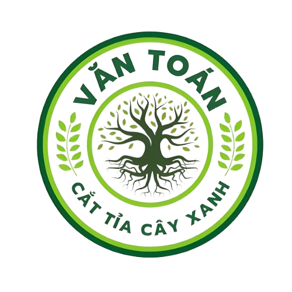
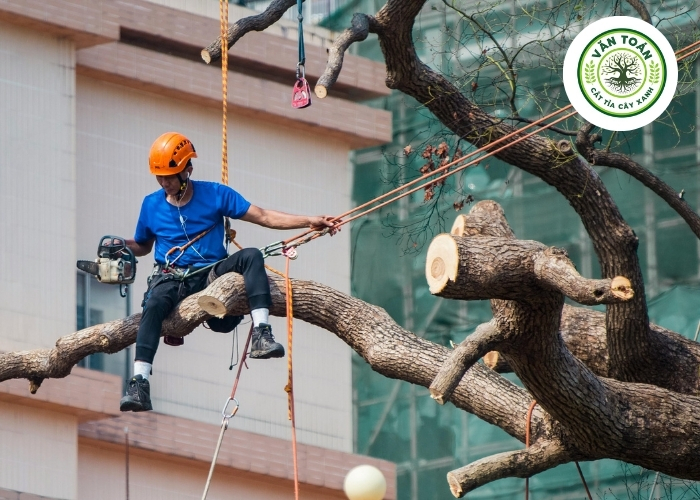
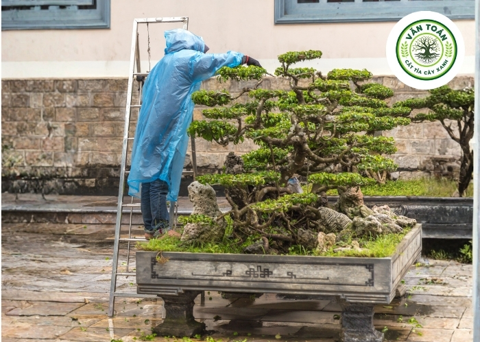
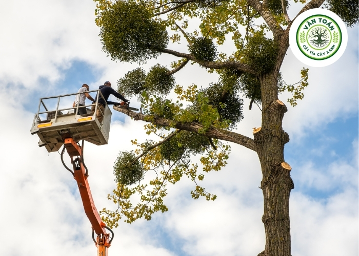

CÂY XANH VĂN TOÁNDịch Vụ Cắt Tỉa Cây Chuyên Nghiệp, Thẩm Mỹ Cao - Cây Xanh Văn Toán
Bạn đang loay hoay không biết xử lý thế nào khi cây trước nhà ngày càng cao, cành vươn sát mái tôn và đường dây điện?
Cây Xanh Văn Toán có hơn 10 năm kinh nghiệm trong ngành dịch vụ cắt tỉa cây chuyên nghiệp tại TP.HCM và các tỉnh lân cận. Với đội ngũ thợ lành nghề, trang thiết bị hiện đại và quy trình làm việc bài bản, chúng tôi cam kết mang đến giải pháp chăm sóc cây xanh toàn diện, an toàn và hiệu quả nhất.
Các Dịch Vụ Cắt Tỉa Cây Tại Cây Xanh Văn Toán
1. Cắt tỉa cành trên cao
Đối tượng: Cây cổ thụ, cây lâu năm có tán rộng, cành vươn xa
Xử lý: Cắt tỉa cành khô, cành sát nhà, che khuất ban công
Kỹ thuật: Thiết bị leo trèo chuyên nghiệp, đảm bảo an toàn tuyệt đối
2. Hạ thấp độ cao, tạo tán
Đối tượng: Cây quá cao, gần đường dây điện
Xử lý: Hạ thấp chiều cao, tạo tán cân đối
Kỹ thuật: Tính toán tỷ lệ cắt phù hợp
3. Cắt tỉa cây cảnh, bonsai
Đối tượng: Sân vườn, biệt thự, quán cà phê
Xử lý: Tạo dáng theo yêu cầu
Kỹ thuật: Thợ tay nghề cao, am hiểu nghệ thuật cây cảnh
4. Cắt tỉa cây sau mưa bão
Xử lý: Cành gãy, cây nghiêng ngả
Ưu điểm: Có mặt sau 30 phút – dịch vụ 24/7
5. Cắt tỉa cây vướng đường dây điện
Xử lý: Phối hợp điện lực, đảm bảo an toàn tuyệt đối
Bảng Giá Dịch Vụ Cắt Tỉa Cây Tham Khảo
| HẠNG MỤC | MỨC GIÁ THAM KHẢO |
|---|---|
| Cắt tỉa cành nhỏ (dưới 5m) | 300.000đ - 500.000đ/cây |
| Cắt tỉa cây 5m - 10m | 500.000đ - 1.000.000đ/cây |
| Cắt tỉa cây 10m - 20m | 1.000.000đ - 2.500.000đ/cây |
| Cây cổ thụ trên 20m | Thỏa thuận |
Hình Ảnh Thi Công Thực Tế



7 Lý Do Khách Hàng Tin Chọn
- Đội ngũ thợ lành nghề – Hơn 10 năm kinh nghiệm
- Trang thiết bị hiện đại
- Cam kết an toàn – Có bảo hiểm
- Giá cạnh tranh – Không phát sinh
- Dịch vụ trọn gói
- Hỗ trợ 24/7
- Bảo hành uy tín
Liên Hệ Đặt Dịch Vụ
Hotline: 098 467 5414